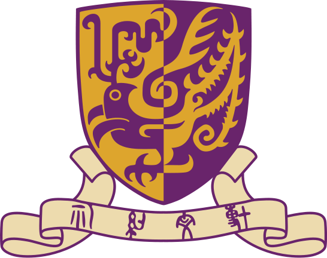
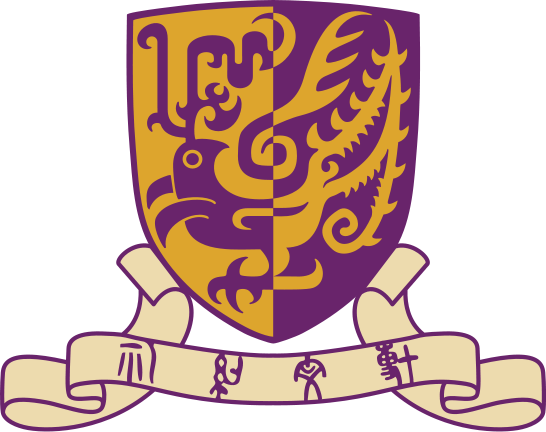

Fangzhou WANG
Ph.D. Student
Department of Computer Science and
Engineering
The Chinese University of Hong Kong
Email: wfz0755 AT gmail.com


Biography (Resume)
I am a first year Ph.D. student at The Chinese University of Hong Kong, advised by Prof. Evangeline F. Y. Young. Previously, I obtained my bachelor degree in Computer Science from City University of Hong Kong in 2019. My research interests lie primarily in the area of VLSI Physical design, to be more specific, placement and routing.
Publications
Conference Papers
-
[C1] Jinwei Liu, Chak-Wa Pui, Fangzhou Wang, Evangeline F. Y. Young, 'CUGR: Detailed-Routability-Driven 3D Global Routing with Probabilistic Resource Model', ACM/IEEE Design Automation Conference (DAC), San Francisco, CA, USA, July 19-23, 2020.
Selected Honors & Awards
-
1st Place Award in ICCAD 2019 Contest on 'LEF/DEF Based Open-Source Global Router', 2019
-
Full Postgraduate Studentship at CUHK, 2019 - Current
-
The Department of Computer Science Outstanding Student Scholarship, 2019
-
The College of Engineering Dean’s Scholarship (no more than 5 granted each year), 2019
-
HKSAR Government Scholarship Fund – Talent Development Scholarship, 2019
-
Bronze Medal in the 2018 ACM-ICPC Asia Regional (Xuzhou), 2018
-
Silver Award in the 2018 ACM-ICPC China Multi-Provincial Collegiate Programming Contest, 2018
-
Country Level Third Prize in 2017 TCS CodeVita Coding Competition, 2018
-
CityU Full Tuition Scholarship, 2015 - 2019
-
Dean′s List of College of Engineering of CityU, 2015 - 2019
Experiences
Full-time Research Assistant @CityU
-
Supervised by Prof. Henry XU.
-
On machine learning system
-
June 2018 - Aug. 2018, HKSAR
Assistant Analyst Programmer @HKEx
-
On market data processing
-
Aug. 2017 - May 2018, HKSAR
Tools
-
CUGR [C1]
Teaching
-
2019-2020 Spring CSCI1520 Computer Principles and C++ Programming @ CUHK
-
2019-2020 Fall CSCI1120A Introduction to Computing Using C++ @ CUHK
-
2018-2019 Fall CS3391 Advanced Programming @ CityU
-
2017-2018 Fall CS3334 Data Structure @ CityU
Visitors
 
